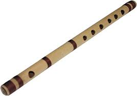

flute

The flute is a family of musical instruments in the woodwind group.
Unlike woodwind instruments with reeds, a flute is an aerophone or reedless wind instrument that produces its sound from the flow of air across an opening.
According to the instrument classification of Hornbostel–Sachs, flutes are categorized as edge-blown aerophones.
A musician who plays the flute can be referred to as a flute player, flautist, flutist or, less commonly, fluter or flutenist.